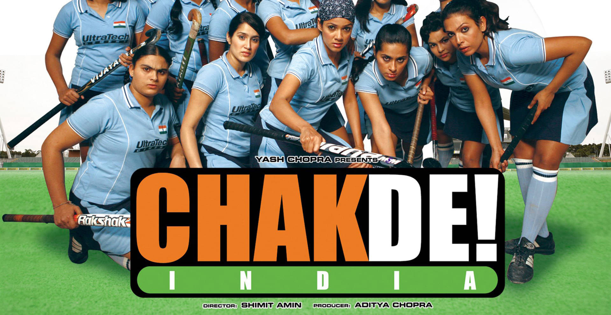
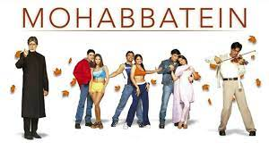

hak De! India (transl. "Go for it! India!")[3] or (transl. "Let's go! India")[4] is a 2007 Indian Hindi-language sports film directed by Shimit Amin, written by Jaideep Sahni, and produced by Aditya Chopra, under the banner of Yash Raj Films. It stars Shah Rukh Khan as Kabir Khan, the fictional former captain of the India men's national field hockey team and coach of the India women's national field hockey team, alongside a cast of 16 actresses, both professional and non-professional hockey players. The sports scenes were choreographed by Rob Miller, and the soundtrack was composed by Salim–Sulaiman.
Kareena Kapoor Khan (pronounced [kəˈriːna kəˈpuːr xɑːn]; née Kapoor; born 21 September 1980) is an Indian actress who appears in Hindi films. She is the daughter of actors Randhir Kapoor and Babita, and the younger sister of actress Karisma Kapoor. Noted for playing a variety of characters in a range of film genres—from romantic comedies to crime dramas—Kapoor is the recipient of several awards, including six Filmfare Awards, and is one of Bollywood's highest-paid actresses.[1]

Narayan is a strict principal of Gurukul who does not believe in love and forbids his students from following their hearts. However, things take a turn when a music teacher challenges his authority.
| Grate | Good | Better | Best |
|---|---|---|---|
| Chak de india | 3 Idiots | Mohobate |